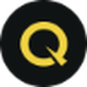
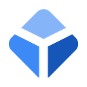
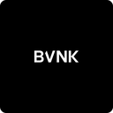

Crypto.com
Foris DAX MT Limited · marcas: Crypto.com
Puede operar en EspañaLicencia MiCA (inferida)Art. 59 · inferido
Sí: puede prestar servicios cripto en España
Figura en el registro MiCA con España entre sus países de servicio. Datos del registro ESMA a 22/10/2026.
- País de origen
- Malta
- En el registro desde
- 27/01/2025
- Servicios MiCA
- 6
- Países donde opera
- 29
Tipo de habilitación
Licencia MiCA (inferida)Art. 59 · inferido Inferencia · confianza media
No figura como banco (BCE) ni como empresa de inversión/gestora (ESMA): solo puede operar con autorización CASP (Art. 59).
Ficha del registro
- Sociedad
- Foris DAX MT Limited
- País de origen
- Malta
- Supervisor
- Malta Financial Services Authority (MFSA)
- En el registro desde
- 27/01/2025
- Base legal (ESMA)
- No indicada
- LEI
2549005CVR5HH70FDO07- Dirección
- Level 7, Spinola Park, Triq Mikiel Ang Borg, San Giljan, SPK 1000, Malta
- Web
- crypto.com
- Última actualización
- 06/02/2025
Servicios MiCA autorizados 6
- aCustodia y administración
- cCanje de cripto por fondos
- dCanje de cripto por cripto
- eEjecución de órdenes
- gRecepción y transmisión de órdenes
- jServicios de transferencia
Países donde puede operar 29
AustriaBélgicaBulgariaChipreChequiaAlemaniaDinamarcaEstoniaGreciaEspañaFinlandiaFranciaCroaciaHungríaIrlandaIslandiaItaliaLiechtensteinLituaniaLuxemburgoLetoniaPaíses BajosNoruegaPoloniaPortugalRumaníaSueciaEsloveniaEslovaquia
Marcas de esta sociedad
Otros proveedores con sede en Malta
Ver la lista completa →
BequantMalta · Art. 59 · inferidoPuede operar en España
Blockchain.comMalta · Art. 59 · inferidoPuede operar en España
BVNKMalta · Art. 59 · inferidoPuede operar en EspañaCalamatta Cuschieri Investment Services LimitedMalta · Art. 60 · probablePuede operar en EspañaDamexMalta · Art. 59 · inferidoPuede operar en EspañaEverestMalta · Art. 59 · inferidoPuede operar en España¿Dudas sobre licencias, notificaciones o el periodo transitorio? Lee la guía MiCA para España.